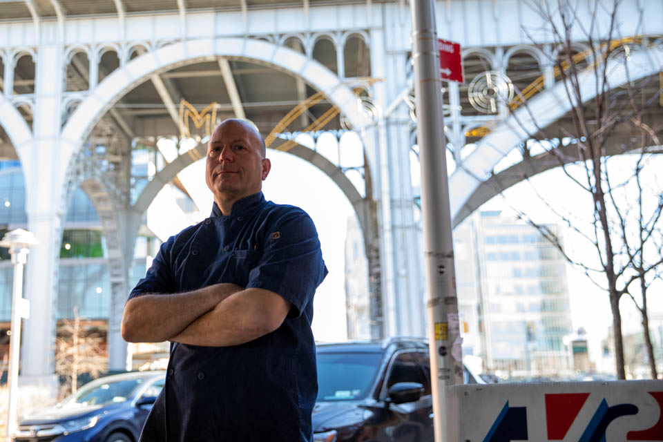

Leadin. Something to draw the reader in. Graphics is the only visuals and words desk at the Spectator.
Nutgraf. What is the meat of the story? Necessary context. Why does this matter?

Ramon
owner of Floridita
123 Broadway st.

Filler tk
Filler tk
Filler tk
Filler tk

Lizette
owner of Bierstrasse Beer Garden
456 Broadway st.
Filler tk
Filler tk
Filler tk
Filler tk
No Name for now
owner of Bierstrasse Beer Garden
456 Broadway st.
Powerful ending.
Staff graphics reporter Clay Anderson can be contacted at clay.anderson@columbiaspectator.com.